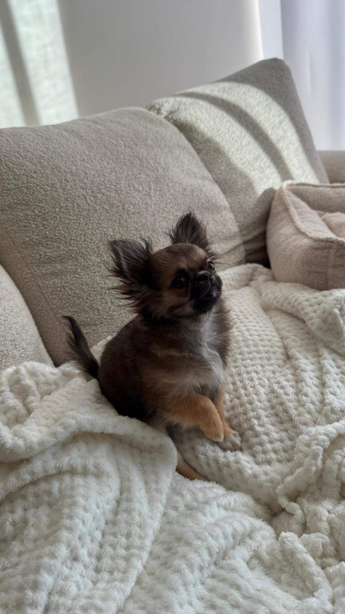

Zanim ruszysz na zakupy
Dobra wiadomość na start: szczeniak chihuahua czy maltańczyka naprawdę nie potrzebuje wiele. Potrzebuje za to kilku właściwych rzeczy we właściwym rozmiarze, bo akcesoria „dla psa” bywają projektowane z myślą o labradorze, nie o 1,5-kilogramowym maluchu.
Druga zasada: część zakupów celowo odłóż na później. Szelki najlepiej dobrać do konkretnego pieska po odbiorze, a góra zabawek z pierwszej wizyty w sklepie zwykle przegrywa z jedną ulubioną. Kupuj mądrze, nie dużo.
Niezbędnik na dzień odbioru
To lista rzeczy, które powinny czekać w domu, zanim maluszek przekroczy próg:
- Transporter, miękki lub plastikowy, stabilny, wyłożony kocykiem. Przyda się na podróż z hodowli i każdą wizytę u weterynarza.
- Legowisko z bokami, małe, przytulne, z „obejmującymi” ściankami. Miniaturki uwielbiają czuć oparcie podczas snu.
- Dwie miski, na wodę i karmę, niskie i ciężkie (ceramika lub stal), żeby maluch sięgał bez akrobacji i ich nie przewracał.
- Karma, ta sama, którą jadł u nas, zapas na start dostaniesz w wyprawce, ale warto mieć kolejne opakowanie tej samej karmy.
- Podkłady higieniczne, podstawa nauki czystości w pierwszych tygodniach.
- Zabawki dla miniaturek, 2-3 sztuki: miękki gryzak, mała piłka, przytulanka do spania. Rozmiar „mini”, zabawka nie może być większa od psa.
- Kocyk polarowy, do legowiska i na kolana. Drugi przyda się w transporterze.
- Środki czystości bez amoniaku, do sprzątania wpadek. Zapach amoniaku przypomina psu mocz i zaprasza do powtórki w tym samym miejscu.
Legowisko i kącik maluszka
Wybierz maluchowi jedno stałe, spokojne miejsce, nie na przeciągu, nie przy drzwiach, ale też nie w izolacji. Idealny jest kąt salonu: szczeniak widzi rodzinę (to dla niego ważne!), a jednocześnie ma azyl, w którym nikt go nie niepokoi.
Sprawdzonym rozwiązaniem na pierwsze tygodnie jest kojec pokojowy: w środku legowisko, podkład higieniczny i miska z wodą. Daje maluchowi bezpieczną bazę, gdy nie możesz go pilnować, i bardzo ułatwia naukę czystości. To nie „klatka”, to pokój dziecięcy w wersji psiej.
Rada z naszej hodowli
Do legowiska włóż kocyk z wyprawki, ten pachnący mamą i rodzeństwem, który dostaniesz od nas przy odbiorze. Znajomy zapach to dla szczeniaka najskuteczniejszy środek uspokajający na pierwsze noce. Nie pierz go przez pierwsze tygodnie!
Miski i karma, krótko i konkretnie
Miski: niskie, stabilne, łatwe do mycia. Woda dostępna zawsze, miniaturki muszą mieć do niej stały dostęp.
Karma: przez pierwsze tygodnie dokładnie ta sama, którą maluch jadł u nas, przy odbiorze powiemy, jaka to karma, i dostaniesz jej zapas w wyprawce. Adaptacja to dość stresu dla brzuszka; zmiana diety w tym czasie to prosta droga do biegunki. Jeśli będziesz chcieć przejść na inną karmę, zrób to po adaptacji, stopniowo, jak dokładnie, opisujemy w poradniku o żywieniu.
Bezpieczny dom, spójrz z wysokości 15 centymetrów
Zanim maluch przyjedzie, zrób obchód domu na kolanach, dosłownie. Z perspektywy szczeniaka świat wygląda inaczej i kilka rzeczy trzeba zabezpieczyć:
- Kable, spięte lub schowane; gryzienie kabli to szczenięca klasyka.
- Rośliny doniczkowe, część popularnych roślin (np. monstera, dracena) jest dla psów toksyczna; przenieś je wyżej.
- Drobiazgi na podłodze, gumki, monety, dziecięce klocki: wszystko, co zmieści się w pyszczku, prędzej czy później się w nim znajdzie.
- Chemia i leki, za zamkniętymi drzwiczkami, jak przy małym dziecku.
- Skoki, kanapa i łóżko to dla miniaturki wysokość skoczni. Schodki dla psa albo konsekwentne zdejmowanie na rękach chronią stawy i rzepki.
- Szpary i zakamarki, 1,5-kilogramowy szczeniak wciśnie się za każdą szafkę. Sprawdź, gdzie mógłby utknąć.
Na co uważać
Balkon i schody to dwa najczęstsze miejsca wypadków miniaturek. Barierki balkonowe miewają prześwity, przez które 2-kilogramowy piesek przejdzie bez trudu, zabezpiecz je siatką, a schody na start bramką dziecięcą.
Co spokojnie dokupisz później
- Szelki i smycz, dla ras miniaturowych zawsze szelki, nie obroża (delikatna tchawica!). Dobierzesz je do konkretnych wymiarów maluszka po odbiorze; na pierwsze dni wystarczy transporter, bo spacery i tak zaczynają się po zakończeniu szczepień.
- Ubranko na zimę, szczególnie dla chihuahua; kupuj, gdy znasz wymiary psa.
- Akcesoria pielęgnacyjne, szczotka, grzebień, szampon dla szczeniąt, obcinaczki do pazurków. Przy odbiorze doradzimy konkretne rodzaje pod szatę Twojego malucha.
- Schodki do kanapy, dodatkowe legowiska, mata chłodząca na lato, wygodne, ale nie na dzień pierwszy.
Co dostaniesz od nas w wyprawce
Każdy nasz maluszek wyjeżdża do nowego domu z wyprawką na pierwsze dni. Znajdziesz w niej między innymi zapas karmy, do której szczeniak jest przyzwyczajony, oraz kocyk z zapachem mamy i rodzeństwa. Do tego komplet dokumentów: książeczkę zdrowia, rodowód 4-pokoleniowy i umowę, wszystko omawiamy spokojnie przy odbiorze.
Dzięki temu Twoja lista zakupów robi się krótsza, a pierwsze dni, łatwiejsze dla Was obojga.

Najczęstsze pytania
Ile kosztuje kompletna wyprawka?
Rozsądny zestaw startowy (transporter, legowisko, miski, podkłady, zabawki, kocyk) to zwykle wydatek rzędu 300-500 zł, zależnie od półki cenowej. Nie warto przepłacać za „designerskie” akcesoria na start: maluch i tak zweryfikuje, co lubi.
Klatka kennelowa czy kojec?
Dla miniaturek w typowym domu wygodniejszy jest kojec pokojowy, daje przestrzeń na legowisko, podkład i wodę. Transporter pełni rolę „sypialni” i przydaje się w podróży. Klatka kennelowa nie jest konieczna, choć dobrze wprowadzona też się sprawdza.
Jakie zabawki są bezpieczne dla tak małego szczeniaka?
Miękkie gryzaki rozmiaru „mini”, małe piłki (ale nie na tyle małe, by je połknąć), pluszaki bez plastikowych oczek i piszczałek łatwych do wygryzienia. Unikaj patyków, kości z twardego nylonu i zabawek dla dużych psów, szczenięce ząbki są delikatne.
Czy kupować od razu obrożę z adresatką?
Zamiast obroży, szelki z adresatką albo zawieszką z numerem telefonu, dokładanie do nich GPS-a to kwestia preferencji. U miniaturek obroża nie powinna służyć do prowadzenia na smyczy (nacisk na tchawicę); jako nośnik adresatki w domu jest w porządku, byle lekka.
Masz pytania albo szukasz swojego maluszka? Zadzwoń pod numer 601 074 022, powiemy, co aktualnie mamy, kiedy planujemy kolejny miot i chętnie doradzimy w każdym temacie z tego poradnika.
Zadzwoń